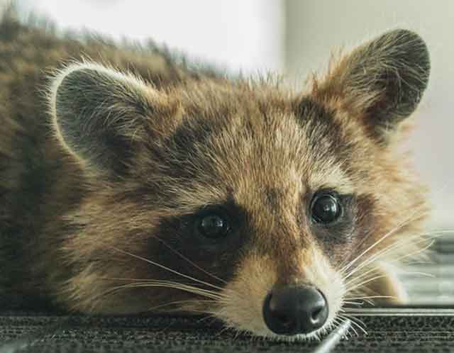

반려동물을 키우면 좋은 이유
전 세계를 통틀어 반려동물을 키우는 동물은 인간밖에 없습니다. 동물이 동물을 키우지 않죠. 사람은 왜 반려동물을 키우고 싶어하는 걸까요? 많은 동물 중에서도 강아지, 고양이, 햄스터 등 동글동글한 이미지를 가진 동물을 키우는 걸까요? 그리고 이렇게 반려동물을 키우면 좋은 이유가 뭘까요? 함께 알아볼게요!
미국 펜실베이니아 대학의 동물윤리 및 복지 교수, 제임스 서펠은 '인간이 동물에게 감정 이입하고 동물이 다치는 것에 죄의식 및 연민을 느끼는 것은 인간의 자연스러운 본능'이라고 설명했습니다.
즉, 인간은 사회적 동물이자 관계 맺는 것을 추구하는 동물인데 반려동물을 키우는 것 역시 사람과 사람이 관계를 맺듯 반려동물과의 관계 맺는 것을 의미합니다. 그래서 특별한 이유가 있지 않아도 반려동물과 함께하면 좋을 것 같다는 생각을 할 수 있습니다. 물론, 모든 사회가 그렇다는 것은 아닙니다. 단지 반려동물을 적극적으로 입양하는 문화는 대게 그런 인식을 가진 것이죠.
"반려동물을 키우면 좋은 이유"
1) 심리적 안정감을 줍니다.
사람의 온도는 36.5. 하지만 반려동물의 체온은 인간의 것보다 약 2도가량 높습니다. 그래서 반려동물을 안으면 사람보다 더 따뜻하기에 심리적으로 안정감을 얻을 수 있습니다.
따뜻한 체온을 느껴 심리적 안정감을 느끼는 것은 일명 '캥거루 케어'라고 표현하기도 합니다. 인큐베이터에 있는 아기를 사람의 품에 안고 다독이며 관리했더니 스트레스가 줄고 호흡기가 안정됐다는 결과가 있었습니다.
2) 배려심을 키울 수 있습니다.
사회생활을 하다 보면 유독 배려심 없는 행동으로 주변 사람을 불편하게 만드는 사람이 있습니다. 특히 외동으로 자란 자녀가 그런 경향을 보이기도 하는 데요. 반려동물을 키우게 되면 평소 같이 노는 것은 물론 배변을 치워주고 잠도 같이 자는 습관이 생기면서 배려심과 이해력이 높아지는 방향으로 뇌가 활성화될 수 있습니다.
3) 가족 간 유대감을 형성할 수 있습니다.
귀가했을 때 가장 먼저 반겨주는 것은 다름 아닌 반려동물입니다. 문 앞에 달려 나와 반겨주기도 하고 때로는 울음소리로 반가움을 표현하기도 하죠. 게다가 할 말이 없는 삭막한 집에서 반려동물의 재미난 행동 하나로 가족 간 얼음장같이 얼어붙은 분위기가 개선되기도 합니다.
이 외에도 집에만 박혀있는 현대인에게 밖으로 외출할 기회를 만들어 준다든가 신체적, 정신적으로도 건강해지는 기회를 만들어주기도 합니다. 단절된 이웃과의 대화도 끌어내는 계기가 될 수 있습니다. 서로 반려동물을 키운다는 공통분모가 기회가 될 수 있죠.
반려동물을 키우는 이유는 제각각이지만, 반려동물을 키우게 됨으로써 느낄 수 있는 긍정적인 영향은 분명하다는 것을 알 수 있습니다. 반려동물을 키우는 이유? 해당하는 것들이 있나요?
[출처] 반려동물을 키우면 좋은 이유 ｜ 작성자 꼬미꼬미